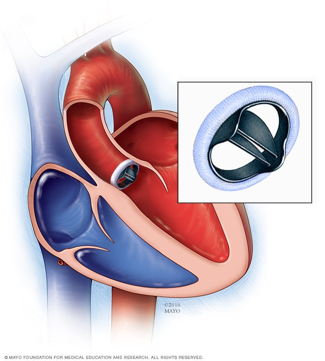

Aortic Valve Replacement (နှလုံးအဆို့ရှင် အစားထိုးကုသခြင်း)

အဓိပ္ပါယ်ဖွင့်ဆိုချက်
Aortic Valve Replacement (နှလုံးအဆို့ရှင် အစားထိုးကုသခြင်း
) ကဘာလဲ။
နှလုံးအဆို့ရှင်မကောင်းသောရောဂါသည် နာကျင်ခြင်း၊ အသက်ရှူရခက်ခြင်း၊ နှင့် သေဆုံးခြင်းထိတိုင်အောင် ဖြစ်နိုင်ပါသည်။ နှလုံးအဆို့ရှင်ကို အစားထိုးကုသခြင်းဖြင့် သင်၏ နာကျင်မှုကို သက်သာစေပြီး သင့်ကို ပို၍အသက်ရှည်စွာနေထိုင်နိုင်ရစေသည်။
နှလုံးအဆို့ရှင်သည် နှလုံးမှ သွေးများစီးဆင်းမှုကို ထိန်းချုပ်ထားသည်။ နှလုံးအဆို့ရှင်မကောင်းလျင် အဆို့ရှင်သည် ကောင်းစွာမပွင့်ခြင်း သို့မဟုတ် ကျဉ်းနေခြင်း သို့မဟုတ် ကောင်းစွာမပိတ်ခြင်းတို့ဖြစ်နိုင်သည်။ အကယ်၍ သင်၏ နှလုံးအဆို့ရှင်သည် ကောင်းစွာမပွင့်ပါက သို့မဟုတ် ကျဉ်းနေပါက မူးဝေခြင်း၊ အသက်ရှူရခက်ခြင်းနှင့် နှလုံးအောင့်ခြင်းများဖြစ်နိုင်သည်။ အဆို့ရှင် ကောင်းစွာမပိတ်ပါက ရင်တုန်ခြင်းနှင့် အသကိရှူမရခြင်းများဖြစ်နိုင်ပါသည်။
Aortic Valve Replacement (နှလုံးအဆို့ရှင် အစားထိုးကုသခြင်း
) က ဘယ်လောက်အဖြစ်များသလဲ
သင့်တွင် ရေတာရှည် အဆို့မလုံခြင်းဆိုးရွားလာပြီး ရောဂါလက္ခဏာများလည်းရှိပါက ခွဲစိတ်ကုသခံရဖို့များသည်။ အဆို့မလုံခြင်းဆိုးရွားလာပါက လက္ခဏာများမရှိပဲလည်း ခွဲစိတ်ကုသခံရနိုင်သည်။ ရုတ်တရက် အဆို့မလုံခြင်းဖြစ်ပါက ချက်ချင်း ခွဲစိတ်ကုသခံရမည်ဖြစ်သည်။
သင့်တွင် အဆို့ရှင် ကျဉ်းသော လက္ခဏာများရှိပါက သင်၏ ဆရာဝန်မှ အဆို့ရှင်အစားထိုးကုသရန် အကြံပြုနိုင်ပါသည်။ ရောဂါလက္ခဏာမရှိသော လူနာအများစုတွင် အဆို့ရှင်ကို အစားထိုးကုသရန်မလိုအပ်ကြပါ။
ခွဲစိတ်ကုသလိုက်လျှုင် အသက်ရှူရပိုကောင်းလာပြီး နှလုံးအောင့်ခြင်းများသက်သာသွားနိုင်သည်။ အသက်ရှည်ရှည် ပိုနေနိင်ပါလိမ့်မည်။
အကြောင်းရင်းများ
နှလုံးအဆို့ရှင်အစားထိုးကုသရနိုင်ချေများစေသော အကြောင်းရင်းများသည် အဘယ်နည်း။
အဆို့ရှင် အစားထိုးကုသခြင်းသည် အောင်မြင်နိုင်ချေများပြီး အခြားပြသနာများဖြစ်နိုင်ချေနည်းသည်။ လူအများစုတွင် အောင်မြင်သောရလဒ်ရှိကြသော်လည်း ခွဲစိတ်မှု အတောအတွင်းတွင် သေဆုံးနိုင်ချေနှင့် အခြားသော ပြသနာများလည်း ရှိနိုင်ပါသည်။ အဆို့ရှင် အစားထိုးခွဲစိတ်မှုသည် Heart attackရဖူးပြီး နှလုံး ဘယ်ဘက်အောက်ခန်းပျက်နေသော လူနာများတွင် အန္တရာယ်ရှိနိုင်ချေများသည်။ ခွဲစိတ်မှုခံယူသော လူနာများ၏ ၅ ရာခိုင်နှုန်းသည် သေဆုံးနိုင်ချေရှိသည်။ အခြားသော ဘေးထွက်ဆိုးကျိုးများမှာ-
• လေဖြတ်ခြင်း။
• အဆို့ရှင် အစားထိုးရာတွင် ပိုးဝင်ခြင်း၊
• Heart attack ရခြင်း တို့ဖြစ်သည်။
သင့်တွင် နှလုံးအဆို့ရှင် မလုံခြင်း သို့မဟုတ် ကျဉ်းခြင်းတို့ရှိပြီး ရောဂါလက္ခဏာများရှိပါက အဆို့ရှင်အစားထိုးကုသခြင်းသည် နှလုံးခွဲစိတ်ခြင်းထက် ပိုထက် အန္တရာယ်ရှိသည်။
နှလုံးအဆို့ရှင်မကောင်းခြင်းကို ကုသရန်အခြားနည်းလမ်းများလည်း ရှိကြောင်း သင်သိသင့်ပါသည်။
သင်၏ ဆရာဝန်နှင့် အောက်ပါတို့နှင့် ပတ်သတ်ပြီး ဆွေးနွေးနိုင်ပါသည်။
• ဆီးဆေး၊ ACE-inhibitor၊ digoxin ကဲ့သို့သော ဆေးများကို ခွဲစိတ်ကုသခြင်းကို အစားထိုးကုသနိုင်သည်။
• ပေါင်ခြံရှိသွေးကြောထဲသို့ ပိုက်ထည့်ပြီး အဆို့ရှင် အစားထိုးကုသခြင်းကို ပြုလုပ်နိုင်သည်။
ခွဲစိတ်မှုမခံယူမီ အန္တရာယ်များနှင့် နောက်ဆက်တွဲပြသနာများကို နားလည်သိရှိရန်လိုအပ်ပါသည်။ သင့်တွင် အခြားသိလိုသည်များရှိပါက သင်၏ ဆရာဝန်နှင့် တိုင်ပင်ဆွေးနွေးပါ။
ပြင်ဆင်ခြင်း
ယခုဖော်ပြထားသော အချက်အလက်များကို ဆေးပညာအကြံပေးမှုနေရာတွင် အစားထိုးရန်မသင့်တော်ပါ။ ပိုမိုသောအချက်အလက်များရရှိရန်အတွက် ဆရာဝန်နှင့် အမြဲတမ်းတိုင်ပင်ပါ.
နှလုံးအဆို့ရှင် အစားထိုးကုသခြင်းအတွက် ဘာတွေ ပြင်ဆင်ထားဖို့လိုအပ်ပါသလဲ။
ခွဲစိတ်မှုကို မေ့ဆေးသုံးပြီး ပြုလုပ်သည်။ မခွဲစိတ်မီ သင့်ကို မခွဲခင် အစားစားလို့ရမရ အပါအဝင် ညွှန်ကြားချက်များသေချာပေးသင့်သည်။ များသောအားဖြင့် မခွဲစိတ်မီ ၆ နာရီအလိုတွင် အစာစားရန်ခွင့်မပြုတော့ပါ။ မခွဲစိတ်မီ နာရီအနည်းငယ် အလိုတွင် ကော်ဖီကဲ့သို့သော အရည်များ၊ ဖျော်ရည်များသောက်ခွင့်ပြုနိုင်သည်။
နှလုံးအဆို့ရှင် အစားထိုးကုသမှုအတောအတွင်း ဘာတွေဖြစ်နိုင်ပါလဲ။
ဤ ခွဲစိတ်မှုသည် ၂ နာရီခန့်ကြာမြင့်နိုင်ပါသည်။ ခွဲစိတ်ဆရာဝန်မှ သင်၏ ရင်ဘတ်ရှိ အရိုးများမှ တဆင့် ရင်ဘတ်ကို ဖွင့်ပါမည်။ အဆုတ် နှလုံးအလုပ်လုပ်သည့်စက်နှင့် သင့်ကို ချိန်ဆက်ပေးထားပြီး အဆို့ရှင်ကို လဲလှယ်နေစဉ်အချိန်အတွင် ထိုမှတဆင့် နှလုံးက အလုပ်လုပ်နေပါလိမ့်မည်။ အဓိကအားဖြင့် လဲလှယ်တတ်သော အဆို့ရှင် ၂ မျိုးရှိသည်။ စက်နှင့်လုပ်သော အဆို့ရှင်နှင့် အသားစနှင့်လုပ်သော အဆို့ရှင် ဖြစ်သည်။
သင့်တွင် မေးစရာရှိပါက သင်၏ ခွဲစိတ်ဆရာဝန်နှင့် တိုင်ပင်ဆွေးနွေးပါ။
ပြန်လည်သက်သာလာခြင်း
အဆို့ရှင်အစားထိုးကုသပြီးနောက် ဘာဆက်ဖြစ်ပါသလဲ။
ခွဲစိတ်ပြီးလျှင် သင့်ကို နှလုံးရောဂါ အထူးကြပ်မတ်ကုသဆောင် သို့မဟုတ် အထူးလူနာဆောင်သို့ ပြောင်းရွှေ့ထားပြီး ရက်အနည်းငယ်ကြာမှ ပုံမှန်လူနာဆောင်သို့ပြောင်းပါလိမ့်မည်။ ၇ ရက်မှ ၁၀ ရက် အကြာတွင် အိမ်ပြန်နိုင်ပါလိမ့်မည်။
ကျန်းမာရေးစောင့်ရှောက်သူများမှ သင် ဘယ်အချိန်တွင် ပုံမှန်လှုပ်ရှားမှုများပြုလုပ်နိုင်မည်ကို သင့်ကို အသိပေးပါလိမ့်မည်။ ပုံမှန်လေ့ကျင့်ခန်းများလုပ်ခြင်းဖြင့် သင့်ကို လှုပ်ရှားသွားလာမှုများကို မြန်မြန်ပြန်လုပ်နိုင်လုပ်နိုင်ပါလိမ့်မည်။ လေ့ကျင့်ခန်းမလုပ်ခင် ကျန်းမာရေးစောင့်ရှောက်သူများနှင့် ဆရာဝန်ကို မေးမြန်းပါ။ လူနာအများစုသည် အသက်ရှူရခက်ခြင်းနှင့် ရင်ပတ်အောင့်ခြင်းများ မရှိတော့ပဲ နေပြန်ကောင်းလာကြသည်။ ပြန်သက်သာလာပြီးနောက်တွင် သင့်တွင် အားအင်များပြည့်နေနိုင်ပါသည်။
Source- Dr. Su Sandy